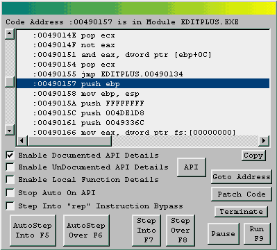
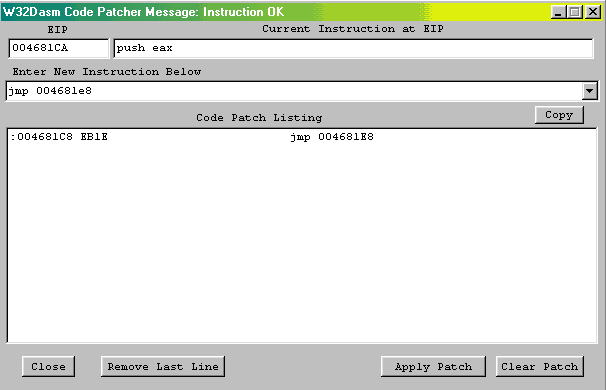

Fabriquer un Saut
1)Intro
Le titre, assez evocateur, risque de laisser perplexe quelques uns...
J'explique donc la demarche : imaginez que vous vouliez cracker un
shareware (ce qui arrive assez souvent qd meme :).
Malheureusement pour vous, ce programme en question ne prevoit
pas qu'un utilisateur puisse s'enregistrer ! Alors ? Incrackable ?
Et bien oui et non....tout depends du programme, mais il y a au moins
2 cas de figure :
-Le programme est vraiment une demo, et tout une partie du code source
de la version finale n'est pas implementé dedans : en d'autre termes, le
programme de demo est issu d'un code source incomplet, et donc dans ce cas,
c'est foutu d'avance ! (on ne peut pas cracker kkchose qui n'existe pas !)
-Le programme demo est exactement le meme que le programme complet, a la
difference qu'au demarrage, on empeche l'utilisateur d'acceder a certaines
fonctions (par exemple "sauvegarder"...) La, pas de probleme, c'est crackable :)
Cmment faire la difference entre une demo crackable et une
demo non crackable ? Et bien la, c pas trop dur, il sufit de
regarder les fonctions non presente dans la demo (si c'est juste
quelqus fonctions d'edition ou de sauvegarde, c bon signe) ou de fouiner
un peu du coté des data string...En general, on y retrouve des phrase concernant
les fonctions amputées pour la démo :)
Donc, mettons que vous avez un programme qui soit une "fausse" demo.
Il est donc crackable, mais pour cela, il va bien souvent falloir
"fabriquer" un saut :)
2)Explications
Vous savez que pour effectuer des changement dans un exe, il
faut passer par de l'hexadecimal...Par exemple, pour inscrire
JE 0045789, il faudra placer le code hexa 74xx (ou 0F84xxxxxx)...
jusque la rien de neuf...
Mais ce qu'il y a derriere ce JE, savez vous a koi cela correspond ?
Et bien cela correspond au nombre d'octets entre le saut
et l'endroit ou l'on veut atterir. ?? bon ok, je vous fait un exemple :
* Possible StringData Ref from Code Obj -> "____key"
:004681BC B89824600 mov eax, 00468290
:004681C1 E8EEBDF9FF call 00403FB4
:004681C6 85C0 test eax, eax
:004681C8 7420 je 004681EA => si mauvaise réponse, aller à 004681EA
* Possible StringData Ref from Code Obj -> "Registration Key Accepted"
:004681CA B8AC824600 mov eax, 004682AC
:004681CF E8104D4DFF call 0043CEE4
:004681D4 A1B0EA4700 mov eax, dword ptr [0047EAB0]
:004681D9 8B00 mov eax, dword ptr [eax]
:004681DB 8B80F0010000 mov eax, dword ptr [eax+000001F0]
:004681E1 C7400C64000000 mov eax, dword ptr [eax+0C], 00000064
:004681E8 EB16 jmp 00468200
* Referenced by a (U)nconditional or (C)onditional Jump at Address :
:004681C8 (C)
:004681EA E8104D4DFF call 0043CFF1
...
...
Vala...c un exemple bateau, mais bon, le but c'est juste de vous faire remarquez
que dans le "7420 je 004681EA", et bien le 74 c'est le JE et le 20 c'est la
distance ou on atteri.... la preuve ? et bien 20 en hexa (passke pour les neu²,
la on est dans du code hexa..) donc je disais 20 en hexa c'est egale a 32
(si vous savez pas comment on calcul, servez vous de HDB...)
Donc si on compte le nombre d'octet entre 7420 et 4681EA, on obtient bien 32.
004681CA B8AC824600 = 5 octets (B8, AC, 82, 46 et 00)
004681CF E8104D4DFF = 5 octets
004681D4 A1B0EA4700 = 5 octets
004681D9 8B00 = 2 octets
004681DB 8B80F0010000 = 6 octets
004681E1 C7400C64000000 = 7 octets
004681E8 EB16 = 2 octets
----------------------------------------
Entre 004681C8 et 004681EA => 32 octets
Voila... donc maintenant que vous avez compris le principe
je vais vous montrer comment on peut se faire un petit saut
de facon manuelle...
3) Jump Jump !
Donc vous avez un prog en 'demo version' et vous avez un peu fouillé
dans les data strings.... Vous reperez "This is a Demo version.." et vous pensez avoir gagné :)
* Referenced by a (U)nconditional or (C)onditional Jump at Address:
|:0045100A(U)
...
... // on dit que la ya plein d'instruction et pas un seul saut...
...
...
:004681BC B89824600 mov eax, 00468290
:004681C1 E8EEBDF9FF call 00403FB4
:004681C6 50 push eax
:004681C7 51 push ecx
:004681C8 8BCE mov ecx, esi
* Possible StringData Ref from Code Obj -> "This is a demo. You can use this...."
:004681CA B8AC824600 mov eax, 004682AC
:004681CF E8104D4DFF call 0043CEE4
:004681D4 A1B0EA4700 mov eax, dword ptr [0047EAB0]
:004681D9 8B00 mov eax, dword ptr [eax]
:004681DB 8B80F0010000 mov eax, dword ptr [eax+000001F0]
:004681E1 C7400C64000000 mov eax, dword ptr [eax+0C], 00000064
* Possible StringData Ref from Data Obj ->" "
:004681E8 5E pop esi
:004681E9 83C40C add esp, 0000000C
...
...
Horreur, vous tombez sur un truc ou ya pas de jump !! Que faire ?
Certain d'entre vous vont tentez de ne pas venir du tout dans cette routine, en
noppant le saut situé en 45100A...(celui qui nous a ammené la..)
Manque de pot, le programme DOIT passer par la routine qui n'ous faite chier,
passke avant et apres cette routine en question, ya le code source
qui permet le lancement du programme.... On est pas dans la merde...
En fait, la seule solution, ce serait de pouvoir eviter juste les instruction qui
nous font chier....
Attention, les plus bourrin de chez bourrin vont dire "ben on va tous nopper"
Arf ! ca marche sans doute, mais putain, un peu de finesse quoi ! Imaginez
que la routine soit sur 50 lignes ! vous imaginez faire une 100aine de nop ?
Non, franchement, ca serait vraiment tres tres cochon, et en plus si on parle
performance brut, ben le processeur se taperait quand meme une centaine d'instruction
NOP inutile, cela ralentirait donc le lancement du prog par rapport a un saut bien
concu par nos soins :) (bon, c vrai que le process peut nous faire 30000000 de NOP
a la seconde, mais c pas un raison pour tout niquer ! non mais !)
Donc, revenons a nos moutons, et voyons ce qu l'on peut faire dans ce cas...
En general, on remarque bien l'endroit interressant : c souvent juste avant la
data string...donc assez facile jusque la. On constate bien que l'endroit qui
nous fait chiez est situé entre 004681C8 et 004681E8....
Bref, plus de doute, il faut faire un saut et que ca saute ! :) Mais ou le placer ?
4) Decollage et Atterissage
Et voui, c'est la grande question, encore que la, dans cette exemple, c'est pas
trop compliqué a trouver... Mais bon, de facon general, ya au moins un trucs a savoir,
et a respecter si on veut pas faire planter le prog :
La zone qu'on saute ne doit pas contenir de push ou de pop...enfin...
Comme toujours, cela depend du contexte, mais de facon general, sachez
qu' un Push ou un Pop agit sur la pile du programme (empilement/depilement).
Cette pile est utilisé tout au long du programme et si on l'altere, cela risque
de faire un plantage dans le prog... Donc retenez bien que de maniere general,
il faut eviter de laisser trainer des push/pop dans le code que vous sautez...
(mis a part dans les CALL...)
Dans le cas qui me sert d'exemple, pas besoin de cherchez midi a 14heures
(arf, la veille expression merdique !), ici on a une superbe piste de decolage
en 004681C8 ainsi qu'un superbe atterissage en 004681E8 ! :)
Ainsi, on esquive ce qui nous plait pas !
5) Made in taiwan..
Bon, reste plus qu'a se fabriquer ce petit saut :)
Pour ca....plusieurs maniere. Ya ceux qui savent utiliser HVIEW, ceux qui utilise
WDASM ou SoftIce et enfin ceux qui utilise leur tete...
En ce qui concerne HVIEW, je vous conseille de lire le
contenu du second FlashTut de ce numero de Memento.
Moi, je m'en tiens a la methode qui va vous faire reflechir, juste histoire
qu vous sachiez comment ca marche koi.... Donc on a :
* Referenced by a (U)nconditional or (C)onditional Jump at Address:
|:0045100A(U)
...
... // on dit que la ya plein d'instruction et pas un seul saut...
...
...
:004681BC B89824600 mov eax, 00468290
:004681C1 E8EEBDF9FF call 00403FB4
:004681C6 50 push eax
:004681C7 51 push ecx
:004681C8 8BCE mov ecx, esi
* Possible StringData Ref from Code Obj -> "This is a demo. You can use this...."
:004681CA B8AC824600 mov eax, 004682AC
:004681CF E8104D4DFF call 0043CEE4
:004681D4 A1B0EA4700 mov eax, dword ptr [0047EAB0]
:004681D9 8B00 mov eax, dword ptr [eax]
:004681DB 8B80F0010000 mov eax, dword ptr [eax+000001F0]
:004681E1 C7400C64000000 mov eax, dword ptr [eax+0C], 00000064
* Possible StringData Ref from Data Obj ->" "
:004681E8 5E pop esi
:004681E9 83C40C add esp, 0000000C
...
...
- 1) On veut placer un Saut inconditionnel en 004681C8.
Comme vous devez le savoir maintenant, un saut conditionnel, c'est EB en hexa.
- 2) On veut aller en 004681E8, donc un deplacement de 30 octet. (z'avez ka compter si vous me croyez pas :))
- 3) 30 octet, c combien en hexa ? et ben 30 = 1E....
- 4) notre saut sera donc EB1E.
- 5) si on veut le patcher, il suffira de remplacer 8BCE par EB1E
Alors, pas tres dur non ?
Et dans WDASM, je peux vous le dire aussi car je le faisait souvent pendant un moment...
Donc (de facon general) voici la demarche a suivre sous Wdasm :
- 1)Desassemblez le fichier exe
- 2)Apres avoir determiné l'adresse de decollage et d'atterissage, notez les sur un papier
(par exemple, dans notre cas ce serait 004681C8 et 004681E8)
- 3)Menu "Debug" => "Load Process" (puis cliquez sur LOAD a la fenetre qui apparait ensuite...)
- 4)Wdasm lance alors le programme en mode debugueur, puis il s'arrete au point d'entrée.

- 5)Cliquez sur "Goto Adress" et tapez l'adresse de votre point de decollage (ici, 4681C8)
- 6)Maintenant, cliquez sur "Patch Code"
- 7)Entrez l'instruction que vous desirez (ici jmp 004681e8) puis appuyer sur la touche entrée

Voila, vous voici avec la ligne contenant le code hexa :) sympa non ? (pensez a le notez avant de faire "close"...)
Si vous voulez tester le patch, faite "apply patch" puis "oui" puis "close" puis "oui" ! (ouf!)
Maintenan, faite "run" et le programme va se lancer comme s'il avat été patché :)
Notez au passage que vous pouvez tres bien utilisé cette petite subtilité de Wdasm pour
tester vos patch, au lieu de faire de sempiternelle vas-et-viens entre Wdasm et votre
editeur hexa favori :)
Au fait, quand vous avez bien fait mumuze, pour quitter, c'est le bouton Terminate :)
Bon, et bien ce petit topo touche a sa fin. J'espere qu'il vous sera utile et
que vous l'avez bien compris :)